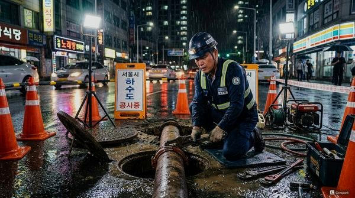
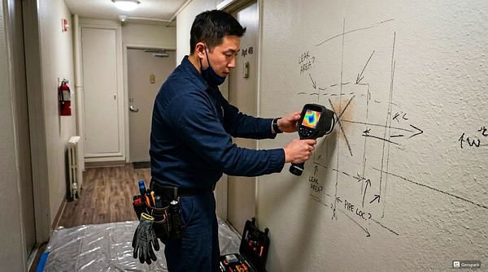

지하실 배관 관리와 침수 예방 완벽 가이드
2026년 4월 12일 | 제우스시설관리
지하실은 건물에서 가장 낮은 위치에 있어 배관 문제와 침수에 취약합니다. 집중호우 시 하수관 역류, 배수 펌프 고장, 지하수 유입 등으로 침수 피해가 발생할 수 있습니다. 사전 예방과 정기 점검이 피해를 최소화하는 핵심입니다.
지하실 배수 시스템의 핵심은 배수 펌프(섬프 펌프)입니다. 이 펌프는 지하에 모인 물을 외부로 배출하는 역할을 합니다. 분기별 1회 작동 테스트를 하고, 연 1회 전문가 점검을 받으세요. 펌프 수명은 평균 7~10년이며, 이상 소음이나 진동이 느껴지면 즉시 교체해야 합니다.
지하실 배관은 습기와 결로로 인해 부식이 빠르게 진행됩니다. 특히 금속 배관은 방식 처리가 필수입니다. 제우스시설관리는 내시경 카메라로 배관 내부 부식 상태를 점검하고, 관로탐지기로 벽 속 매립 배관의 누수 여부를 진단합니다.

침수 예방을 위한 체크리스트: 배수구 막힘 여부 월 1회 확인, 배수 펌프 작동 테스트, 역류방지밸브 상태 점검, 벽면 균열 유무 확인, 방수 코팅 상태 점검. 이 5가지만 정기적으로 점검하면 대부분의 침수 사고를 예방할 수 있습니다.

지하실 침수가 발생하면 전기 시설 접촉에 의한 감전 위험이 있으므로 절대 맨발로 들어가지 마세요. 제우스시설관리는 28분 내 긴급출동하여 배수와 원인 진단을 동시에 진행합니다. 전화: 010-4406-1788